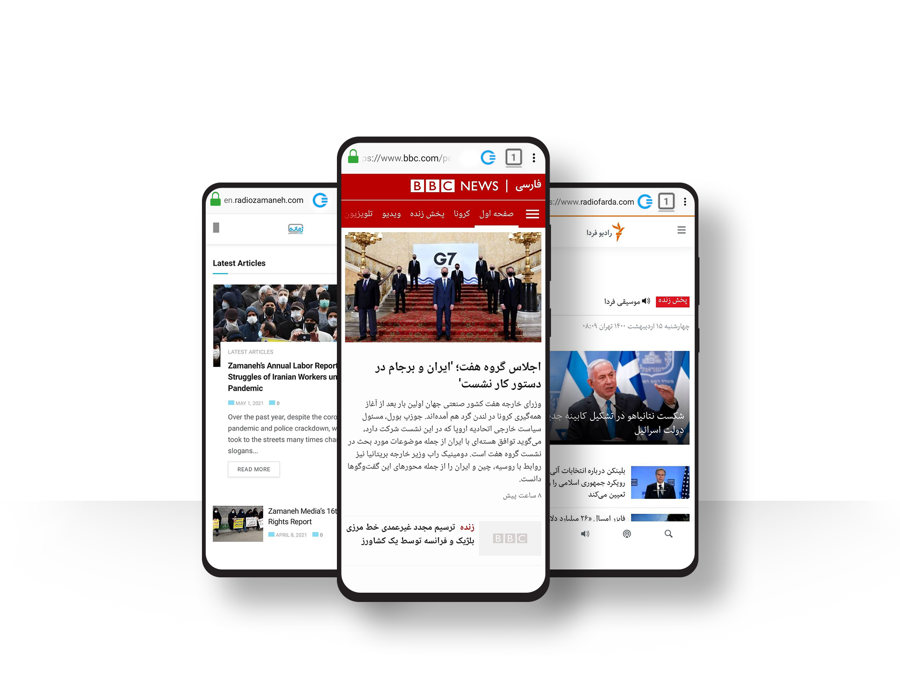
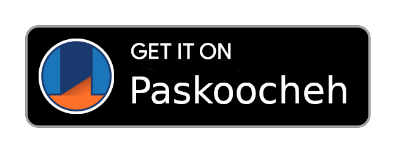
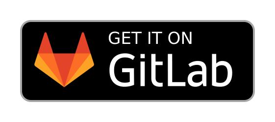
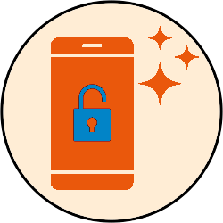
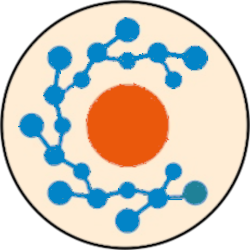

<title>Ceno Browser | Share the Web</title>
<section>
<div class="container">
<!--div class="card home border-0"-->
<div class="row" style="margin-top:70px">
<div class="col-lg-7 order-lg-2 order-sm-1" style="margin-top:-100px">
<div class="home bg-transparent border-0">

</div>
</div>
<div class="col-lg-5 order-lg-1 order-sm-2">
<div class="home border-0">
<h1 id="ReplaceThis">
<p>French-specific content</p>
<ul>
<li>2024 Olympics</li>
<li>Notre Dame reopen</li>
<li>other content</li>
</ul>
</h1>
<p class="card-text">Ceno (short for censorship.no!) is the world’s first mobile browser that side-steps current Internet censorship methods. Its peer-to-peer backbone allows people to access and share web information in and across regions where connectivity has been interrupted or compromised.</p>
<p><a name="download"></a><a href="https://play.google.com/store/apps/details?id=ie.equalit.ceno&amp;pcampaignid=pcampaignidMKT-Other-global-all-co-prtnr-py-PartBadge-Mar2515-1">

</a>
<a href="https://f-droid.org/packages/ie.equalit.ceno/">

</a>
<a href="https://paskoocheh.com/tools/124/android.html?utm_source=UpdatePage">

</a>
<!--a href="https://gitlab.com/censorship-no/ceno-browser/-/releases">
                
            </a-->
</p>
</div>
</div><!--end card 2-->
</div> <!-- row -->
</div> <!-- end container -->
</section> <!-- end section 1 -->
<section>
<div class="container py-3" style="align-content:center; justify-content;">
<!--div class="card border-0"-->
<div class="row">
<div class="col-lg-4">
<div class="card">
<div class="card-body">

<h3 class="card-title" style="text-align:center;">Unlock the Web</h3>
<p class="card-text">Access web content through a network of cooperating peers - even when the internet is down or censored. Install Ceno Browser today and be prepared for the next time you get 🔌 unplugged.</p>
</div>
</div>
</div>
<div class="col-lg-4">
<div class="card">
<div class="card-body">

<h3 class="card-title" style="text-align:center">Grow the Network</h3>
<p class="card-text">Fight censorship by becoming a bridge! Install and run Ceno Browser to instantly join the network and expand the availability of blocked websites to those in censored countries.</p>
</div>
</div>
</div> <!-- end card 2 -->
<div class="col-lg-4">
<div class="card">
<div class="card-body">

<h3 class="card-title" style="text-align:center">Free and Open Source</h3>
<p class="card-text">Ceno is based on <a href="https://mozac.org/">Mozilla Android Components</a>, extended to make use of the <a href="https://gitlab.com/equalitie/ouinet">Ouinet library</a> - enabling third party developers to incorporate the Ceno network into their apps for P2P connectivity.</p>
</div>
</div>
</div> <!-- end card 3 -->
</div> <!-- end row -->
</div> <!-- end container -->
</section> <!-- end section 2 -->